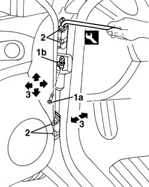
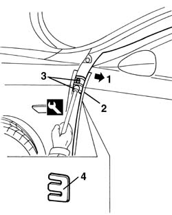
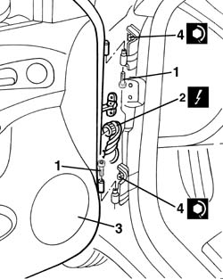

7005A14 front side door - adjust centering and moulding - includes adaptation of hinges and seals on door compartment
- Path
- Procedures > 70 FITTINGS > 7005 PASSENGER COMPARTMENT FRONT SIDE DOORS > 7005A front side door assembly > 7005A14 front side door - adjust centering and moulding - includes adaptation of hinges and seals on door compartment
- Kind
- repair procedure (removal / refitting; the operation number is the code)
- Applies to
- all engines; all production periods
- Interactive page
- https://sloeber94.github.io/elrnDB-a156/en/#/3238561
Applies to: all engines; all production periods
1. Undo the bolt (1a) of the door check strap (1b) and close the door again to push the check strap back in.
2. Loosen the bolts using the appropriate tool.
 | Name | Country |
|---|---|---|
2 | Key | 1.822.120.000 |
3. Adjust the door position, making use of the bolt slots, so that it is perfectly alighed with the body.
It is advisable to work on one hinge at a time.
Possible adjustment movements are indicated by arrows.

Applies to: all engines; all production periods
Fit shims between hinge and door if necessary to ensure the door is adjusted properly, proceeding as follows (the hinge position is adjusted using the door as reference).
7005B14 front side door catch striker r r
1. Move the door back in relation to the hinge attachment.
2. Protect sharp edges of the body with adhesive tape.
3. Undo the bolts.
4. Fit the shims.

Applies to: all engines; all production periods
Screw in the bolts without tightening.
Adjust the door position, making use of the movements of the bolt attachment plate, so that it is perfectly aligned with the body.
7005B14 front side door catch striker r r
Tighten the bolts with the appropriate tool.
| Name | Country |
|---|---|---|
- | Key | 1.822.120.000 |
1. After adjustment, undo the bolts on the hinge pins.
2. Disconnect the electrical connection.
 | Name | Connector |
|---|---|---|
2 | Front left door connection |
| Name | Connector |
|---|---|---|
- | Coupling for rear/right front door |
3. Lift the door and remove it.
4. Tighten the hinge bolts.
 | Fastening | Component | Ø | Value (daNm) |
|---|---|---|---|---|
- | Bolt | FRONT SIDE DOOR HINGES | - | 5.1 - 7.4 |

Applies to: all engines; all production periods
Touch up the paintwork in the hinge area.
Refit the door, securing it with the hinge pin bolts.
Connect the electrical connection.
Check the various appliances on the door are working properly.
Remove the door check strap and tighten the bolts.
Check the striker and catch fit together properly. If necessary 7005A10 front side door - adjust striker and adapt seal in necessary
Topics linked from this page (4)
- 7005A10 front side door - adjust striker and adapt seal in necessary
- 7005B14 front side door catch striker r r
- D30 Front left door connection
- D31 Coupling for rear/right front door